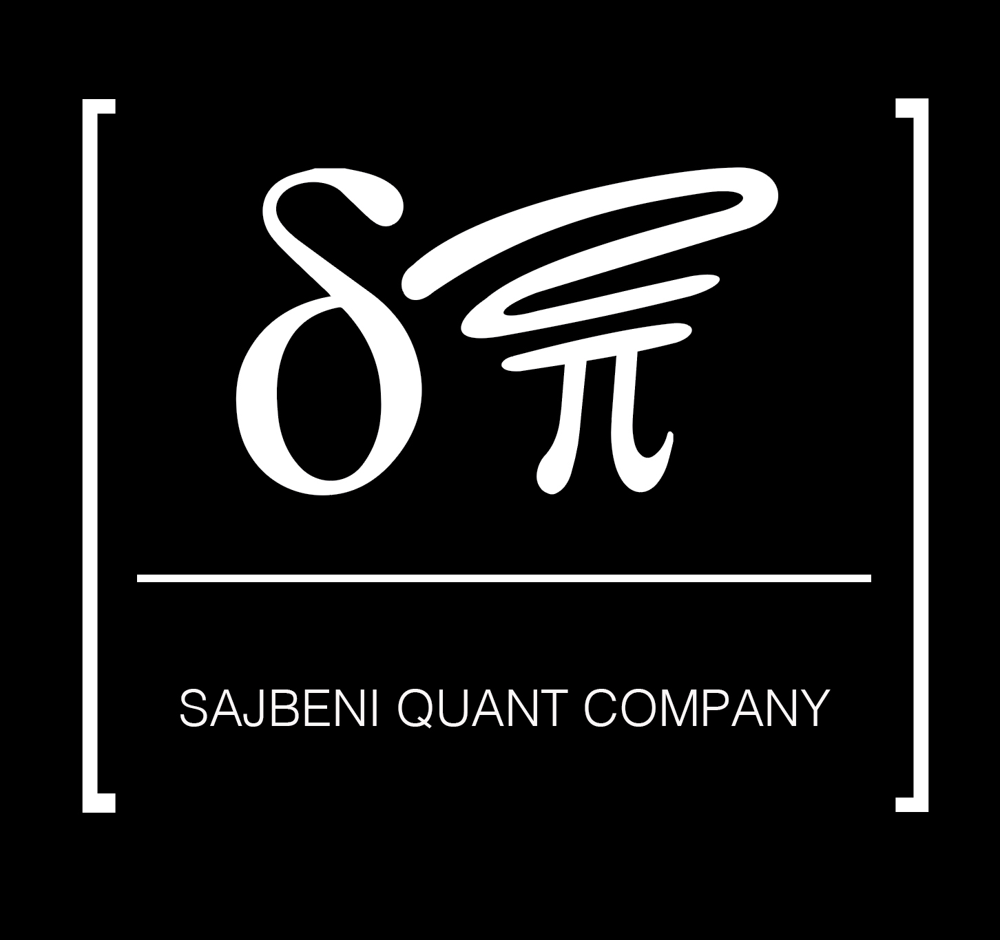
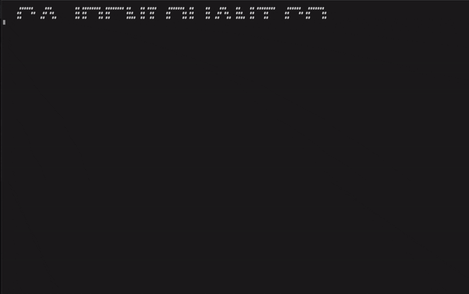

These are ultra-light binaries built for pure performance.
Run them directly in your terminal or shell — no installers,
no tracking, no analytics. We don't know who uses them,
and we don't want to. Only results — clear, fast, financial truth.

At Sajbeni Quant Co., we build tools that
turn numbers into truth.
We believe financial models should be transparent,
reliable, and as sharp as the waves of logic themselves.
Our systems — written entirely in pure Rust — are grounded
in first principles:
crafted for clarity, performance, and mathematical integrity.
Whether you’re an investor, a fund, or a researcher,
our software lets you simulate, audit, and decode
portfolios with scientific precision —
from the beach or the boardroom.
We don’t chase milliseconds.
We build clarity, resilience, and confidence.
“To teach is to learn again. To simplify is to master.”
Sajbeni Quant Co.